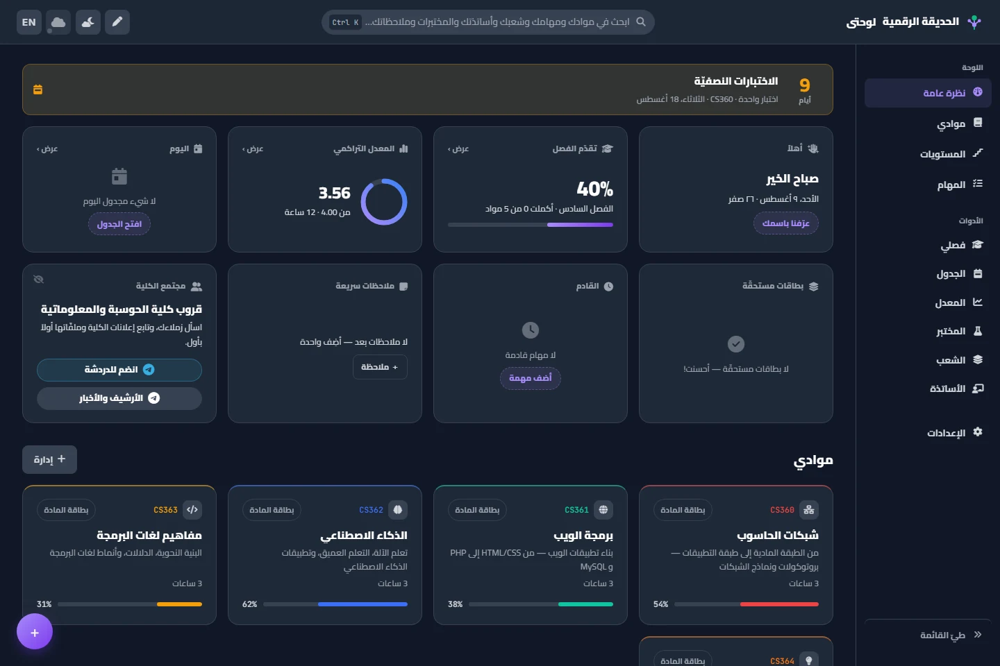
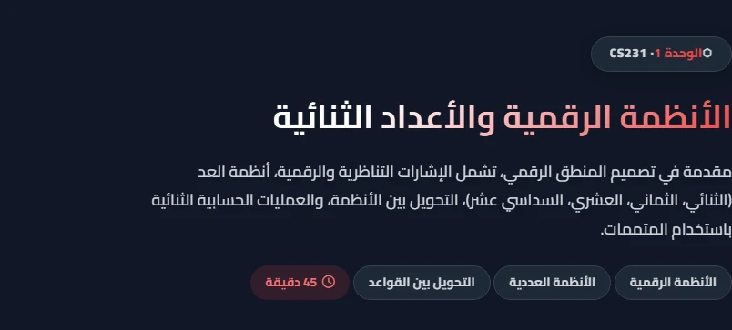
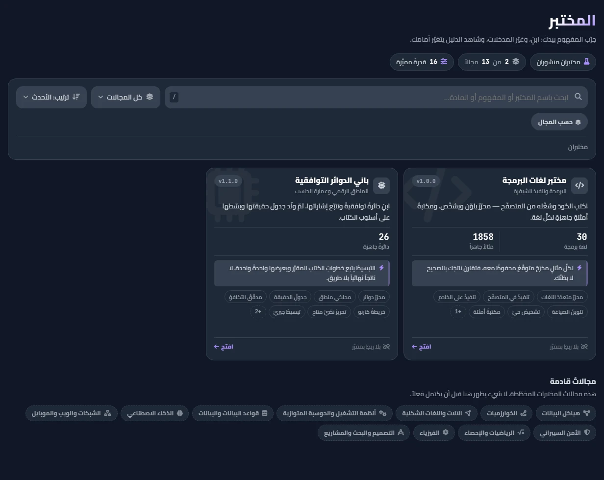
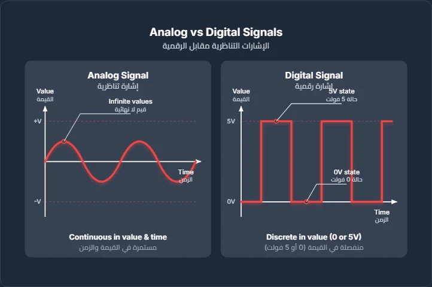
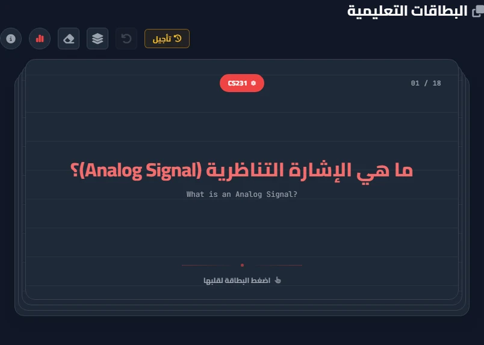
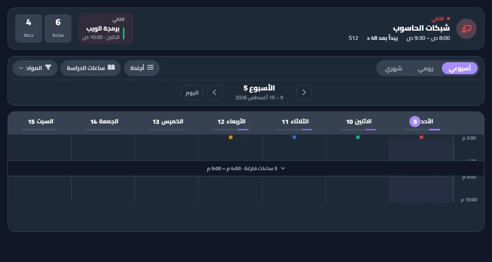

من المقرر إلى يومك الدراسي كله
ليست مكتبةَ مقررات.
منظومةٌ تنمو معك.
الحديقة الرقمية تجمع الفهم والمراجعة والتخطيط والقرار والتجربة في مكان واحد، صُمّم لطالب علوم الحاسب منذ أول فصل حتى التخرج.
libbard.github.io/Garden



يعمل بلا إنترنت
عربي · English
بلا حساب
SCROLL
01
الفهم أولاً
تدخل الوحدة، فتجد طريقاً لا كومة محتوى.
كل درس يبدأ بهدف واضح، ثم يسمح لك باختيار عمق القراءة، ويفتح المصطلح عند لمسه، ويحوّل الفكرة المجردة إلى مخطط يمكن رؤيته.
اختر عمق الشرح
شرح متوازن يبني الفكرة ثم يثبتها بمثال ومقارنة.
CS231 · MODULE 01
ابدأ من الصورة الكبرىالمدة، المحاور، والهدف أمامك قبل أول سطر.
مخطط فعلي من الوحدةSVG · 01 / 1,311

6,201مصطلحاً يُعرّف بلمسة
1,311مخططاً متجهيّاً
3,707فيديوهات منتقاة
02
المعرفة التي تعود في وقتها
لا تراجع كل شيء. راجع ما أوشكت أن تنساه.
البطاقات والاختبارات ليست ملحقاً في آخر الصفحة؛ إنها حلقة تعلم تقيس محاولتك وتعيد المفهوم في اليوم الذي تحتاجه.
جرّب بطاقةSM‑2
SPACED REPETITION

اختبر نفسك01 / 10
ما أساس النظام السداسي عشر؟
اختر إجابة لترى التصحيح الفوري.
01تتعلّم
→
02تجيب
→
03يقيس
→
04يعيدها في وقتها
03
من المعلومة إلى الفصل
كل ما عليك، وكل ما أنجزته، في إيقاع واحد.
فصلي ليس قائمة مواد؛ إنه صورة تشغيلية للأسابيع القادمة، تربط المحاضرة بالاختبار والمهمة وتقدمك داخل كل مقرر.
MY SEMESTER · LIVE VIEW
أسبوعك الآن
كل مادة كقصة تقدم

اليوم · الأسبوع · الشهر
جدول يفهم الفصل، لا مربعات وقت فقط.
محاضرات واختبارات ومذاكرة، تقويم بلاك بورد، تنبيهات، وطباعة A4 متجهة.
افتح الجدول↗
خطة مكثفة تُحسب، لا قالب جاهز
من الوحدات والاختبارات إلى جلسات قابلة للتنفيذ.
اختر موادك ووحداتها، ضع مواعيد الاختبارات وإيقاع يومك؛ فتحسب الحديقة السعة والتعارضات، وتوزّع الجلسات والمراجعة المتباعدة قبل كل اختبار.
18 جلسة موزعة على 9 أيام، مع مراجعة قبل كل اختبار.
أنشئ خطتك المكثفة↗
حتى الاختبار09 DAYS · 18 SESSIONS
CS231 · 6
CS240 · 7
MATH150 · 5
الأحدM03M05
الاثنينM04M06
الثلاثاءM04↻مراجعة
الأربعاءM07M06
الخميسM05↻تثبيت
يتجنب التعارضمراجعة متباعدةيفحص السعة
04
قراراتك قبل أن تصبح نتائج
قيّم المادة والأستاذ، ثم قرّر بخريطة كاملة.
تفصل الحديقة بين طبيعة المقرر وتجربة تدريسه، وتجمعهما مع بيانات الشُعب والخطة والمعدل؛ فلا يتحول رأي واحد إلى قرار دراسي كامل.
تقييم المقررCS231 · SAMPLE
كيف هي المادة فعلاً؟
رأي مؤرخ بالفصل، منفصل تماماً عن تقييم الدكتور.
الصعوبةمتوسطة
الوقت الأسبوعي5–8h
طبيعة المادةفهم + تطبيق
إيقاع المذاكرةنمط الأسئلةمصادر نافعة
اقرأ تقييمات المادة↗
قراران لا قرار واحد
نفصل بين صعوبة المحتوى وجودة التجربة.
ثم نعرض عدد المشاركين والفصل الذي قُيّم فيه الرأي حتى تقرأ النسبة بمقامها.
تقييم الأستاذ230 FACULTY
كيف كانت تجربة التدريس؟
تقييم مرتبط بالمادة والشعبة والفصل، لا اسماً منفصلاً عن السياق.
وضوح الشرح
عدالة التقييم
حجم العبء
قيمة المحاضرة
استكشف تقييمات الأساتذة↗
GPA · 6 LEVELS · LIVE CURVE
سجل متعدد المستوياتترى الاتجاه، لا رقم فصل واحد.
جرّب هدفاً3.50
2.503.254.00
هدف واقعي: تحتاج إلى متوسط B+ تقريباً في الساعات المتبقية.
مرتبة الشرفحتى التخرجماذا لو؟
84,032شعبة من 38 فصلاً
783تقييماً للأساتذة
550مقرراً في 15 خطة
05
الفكرة تحت يدك
لا تكتفِ بقراءة المنطق والبرمجة. شغّلهما.
بيئتا عمل حقيقيتان لا ألعاب مصغرة: ابنِ دائرة من مكتبة عناصر كاملة واستخرج دليلها الرياضي، أو اكتب وشغّل واحفظ ملفاتك عبر عشرات لغات البرمجة.
LABS · 31 LANGUAGES · FULL CIRCUIT KERNEL
جرّب الدائرةAND
فعّل المدخلين معاً ليضيء الخرج.
31لغة برمجة
PythonJavaRustHaskellMARIESQLGoScala
1,870مثالاً قابلاً للتشغيل
باني الدوائر التوافقيةCS231 · EVIDENCE KERNEL
ارسم بحرية أو ابدأ من مثال موجّه؛ كل تغيير يعيد حساب الدليل، لا الصورة وحدها.
جدول الحقيقة
Karnaugh
تبسيط جبري
تتبّع الإشارة
Undo / Redo
استيراد وتصدير
افتح باني الدوائر↗
مختبر لغات البرمجةFILES · TERMINAL · AI EXPLAIN
1public static void main(String[] args) {2 System.out.println("Hello, Garden");3} Process finished · 0.42s
ملفات متعددةتشغيل تفاعليطرفيةشرح وتقييمحفظ تلقائي ومحفوظات
افتح مختبر البرمجة↗
06
جهازك أولاً
بياناتك عندك. والسحابة طريق، لا منزل.
تعمل الحديقة بلا إنترنت وبلا حساب أو بريد. مفتاح واحد يربط أجهزتك، وتعديلاتك تندمج بنيوياً بدل أن يدهس جهازٌ جهازاً آخر.
النتيجةمهمة + مراجعةلم يُحذف شيء
⌁بلا إنترنتكل الأساسيات على جهازك
◇بلا حسابلا بريد ولا كلمة مرور
⌗QR مؤقتيربط الجهاز ثم يموت
⇄تصدير كاملبياناتك قابلة للنقل
ثيم الموقع · ثيم الدراسة · لون المادة
لا توجد حديقة واحدة للجميع.
ثيم الواجهة شيء، وبيئة القراءة والدراسة شيء آخر، وهوية كل مادة شيء ثالث. تغيّر واحداً دون أن تفرض البقية عليه.
لون المادةCS231
01
تصميم المنطق الرقميالوحدة التالية: الجبر البولياني
68%
هذه معاينة آمنة؛ لون مادتك المحفوظ يظهر تلقائياً ولا يتغير إلا من داخل الحديقة.
افتح تجربة المادة↗
11 ثيماً لصفحات الدراسة
مساحة القراءة تتجدد مع مزاجك، لا مع ثيم الموقع فقط.
ورق دافئ، GitHub، Solarized، One Dark، Dracula، Nord، Gruvbox، OLED، Tokyo Night، Amber Night—أو الحديقة كما هي.
CS231 · MODULE 04طوكيو ليلاً
BOOLEAN ALGEBRA
لماذا نُبسّط الدائرة؟
كل حد نحذفه يعني بوابة أقل، زمناً أقصر، وطاقة أدنى.
F = A·B + A·B̅= A·(B + B̅)= A
07
لا شيء مخفي في الهامش
الأطلس الكامل للحديقة.
كل خاصية موجودة اليوم هنا، مرتبة بحسب ما تفعله لك. سيكبر هذا السجل كلما نمت الحديقة.
هذه ليست النهاية. هذه أول خطوة.
ابدأ من مادتك. ودع الحديقة ترتّب ما حولها.
بلا تسجيل، وبلا بريد، وبلا شيء يحول بينك وبين أول وحدة.
AR / ENPWALOCAL FIRSTSEU CS